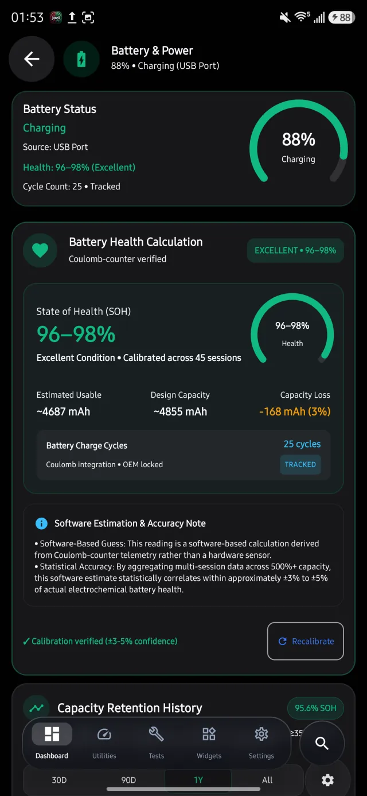
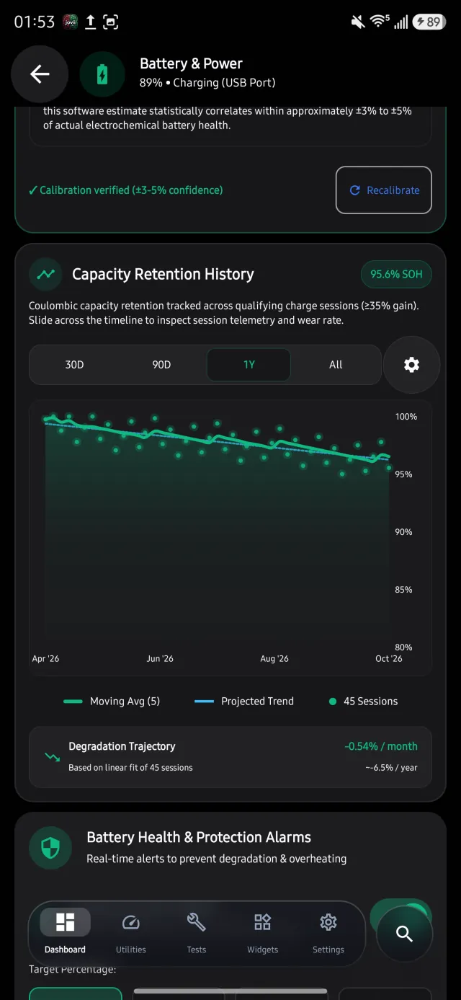
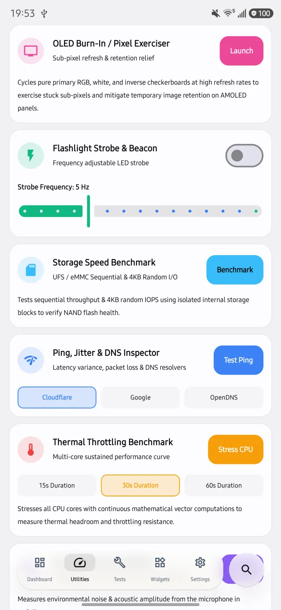
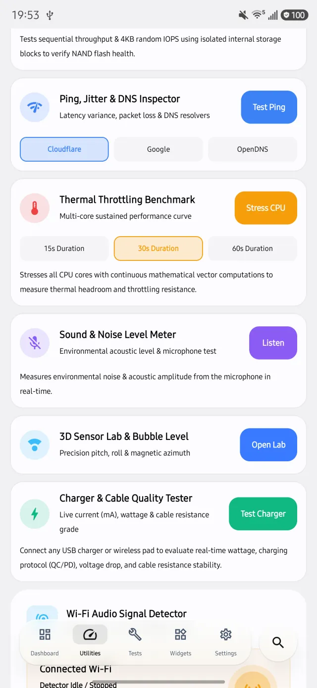
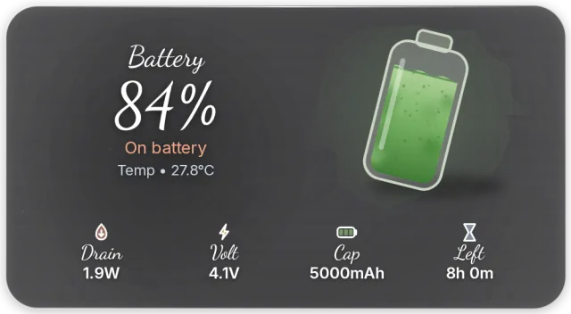
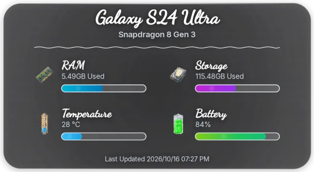
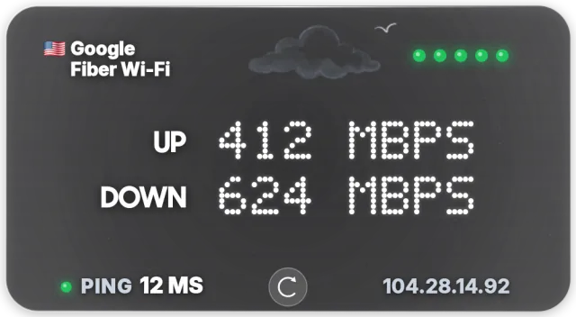
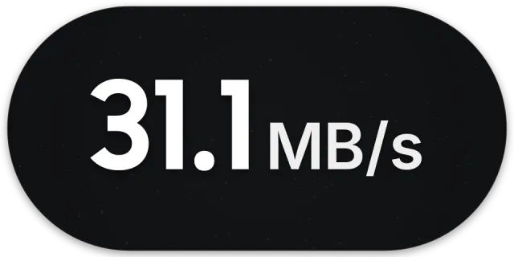
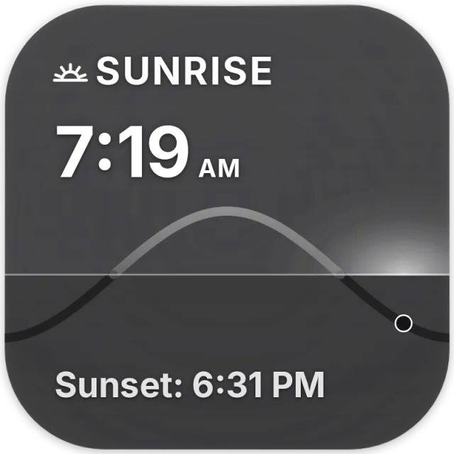
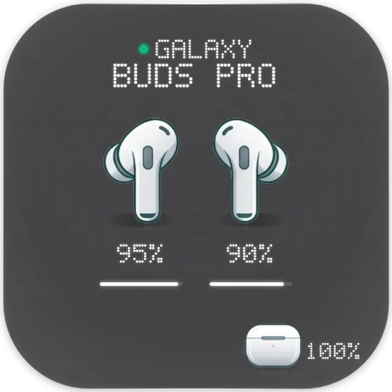

Live dashboard
- Tiles for CPU, RAM, storage, battery and thermals
- Display, camera, sensor and network at a glance
- One tap into any component
Live hardware telemetry, battery health estimates, diagnostics and home-screen widgets in one app. No account needed.
Get it on Google Play
From per-core clocks to a used-phone report.
Battery history and a full bench of tools.



Widgets that follow day and night, in frosted, AMOLED, transparent and opaque styles.






Jovii needs no sign-in, and your hardware readings are worked out on the device. It contains ads, and network tools such as ping and DNS tests contact public servers when you run them. Battery health is a software estimate, not a hardware reading. The privacy policy has the details.
Read the privacy policy